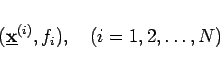
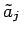
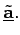
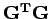

Inhalt Index DeskTop Bronstein

 Wahrscheinlichkeitsrechnung und Mathematische Statistik Mathematische Statistik Korrelation und Regression Mehrdimensionale Regression
Wahrscheinlichkeitsrechnung und Mathematische Statistik Mathematische Statistik Korrelation und Regression Mehrdimensionale Regression


Der theoretische Zusammenhang (16.163) wird durch Meßwerte
|  | (16.165a) |
auf Grund zufälliger Meßfehler nicht exakt wiedergegeben. Man macht deshalb den Ansatz
und bestimmt nach der Fehlerquadratmethode gemäß
die Koeffizienten , die als Schätzwerte für die theoretischen Koeffizienten aj dienen. Mit den Bezeichnungen
erhält man aus der Forderung (16.166c) das sogenannte Normalgleichungssystem
zur Bestimmung von  Die Matrix  ist symmetrisch, so daß sich zur Lösung von (16.166c) das CHOLESKY-Verfahren besonders eignet.
| Beispiel | ||||||||
|
Mit Hilfe einer Stichprobe, deren Ergebnisse die folgende Wertetabelle enthält,
</TD></TR></TABLE> sind die Koeffzienten der Regressionsfunktion
zu bestimmen. Aus (16.166d) folgt
und (16.166e) lautet
|